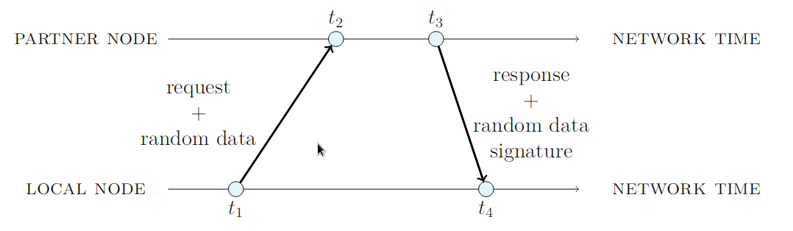

ノードプロトコル
NISノードは、デフォルトで独自のバイナリ形式を使用して通信します。 この形式は、要求を圧縮してネットワーク帯域幅を最小化し、 シリアライズとデシリアライズのコストを削減します。 実際、すべてのNIS APIは NEM独自のバイナリ形式またはJSONでエンコードされた要求をサポートしています。
偽装攻撃を防止するために、NISノードは、コミュニケーション時に２段階のハンドシェイクを実行します：
- ローカルノードは、要求データとランダムな64バイトのペイロードをノードリモートに送信します。
- リモートノードは、ランダムなペイロードに署名し、署名を応答データとともにローカル・ノードに送り返します。
- ローカルノードは署名をチェックし、リモートノードがランダムなペイロードに署名したことが確認できたときのみ、 応答データのみを処理します。
図15
